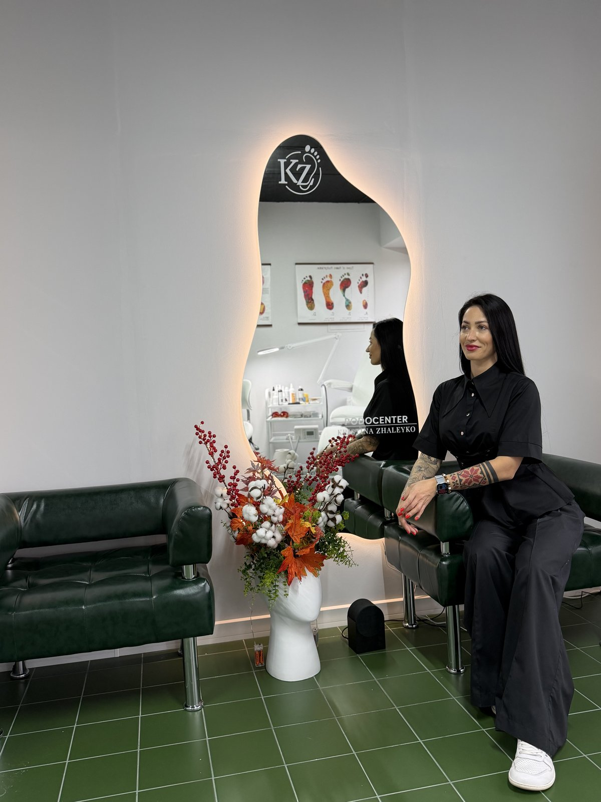
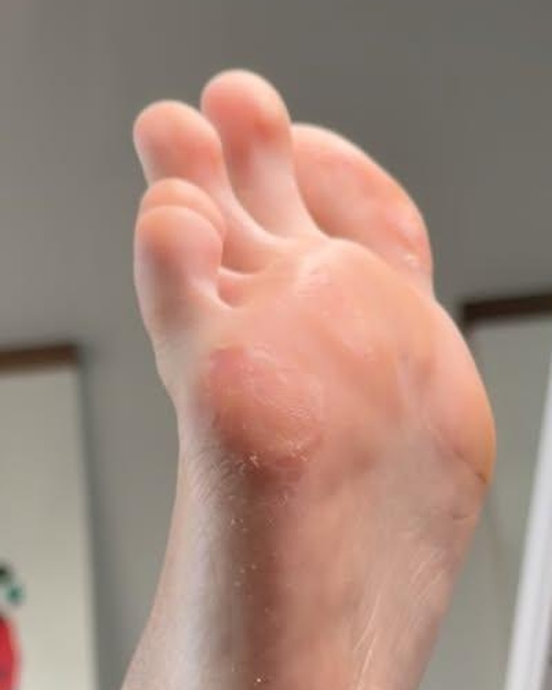
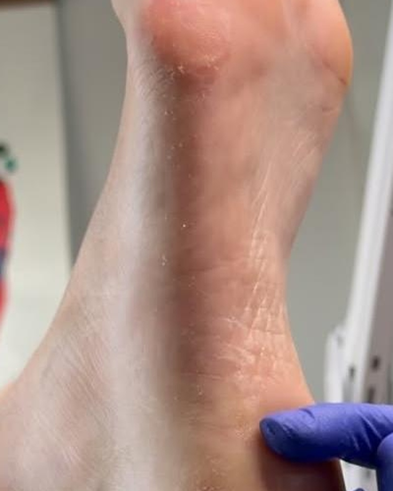
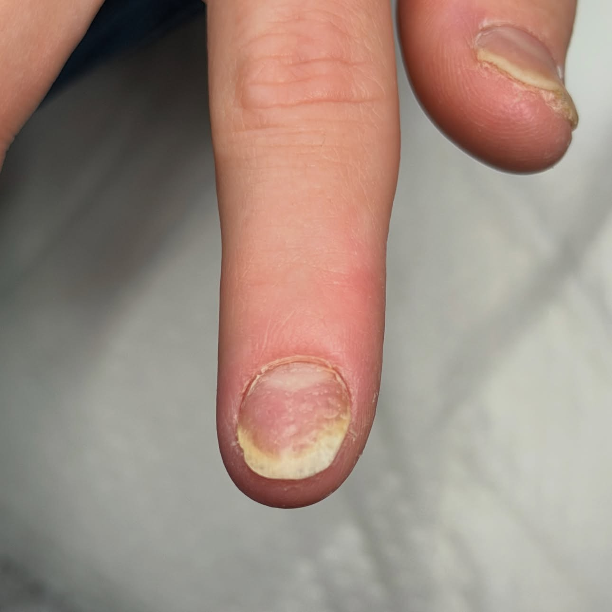
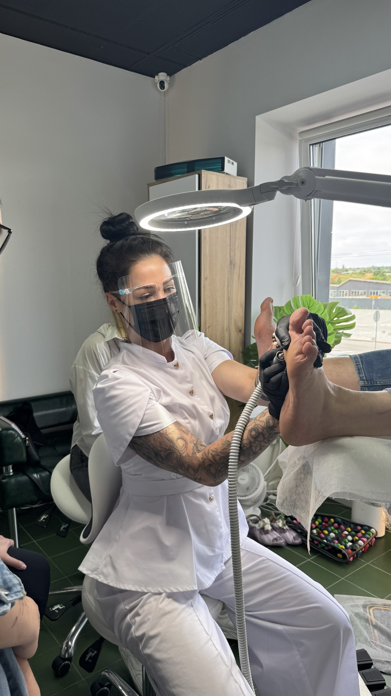
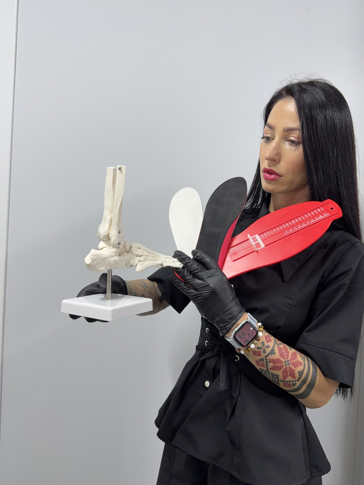
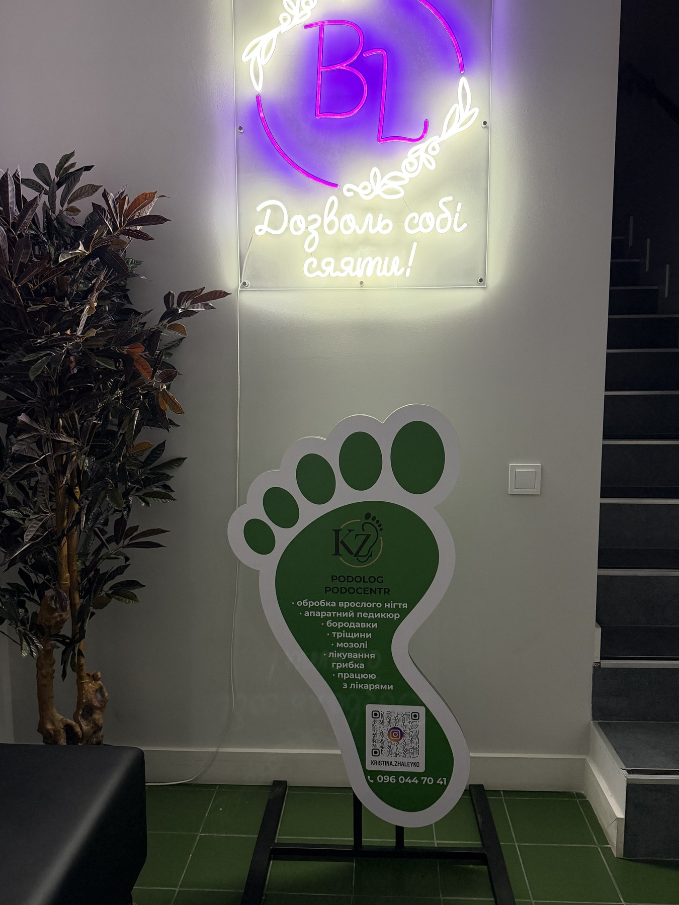
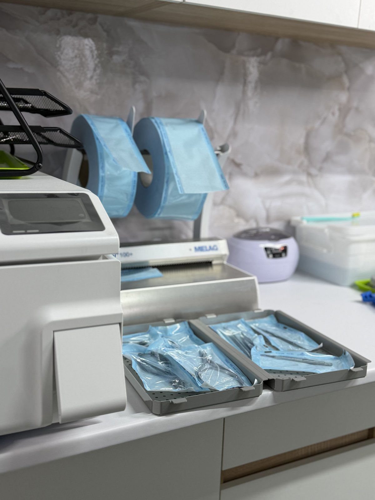
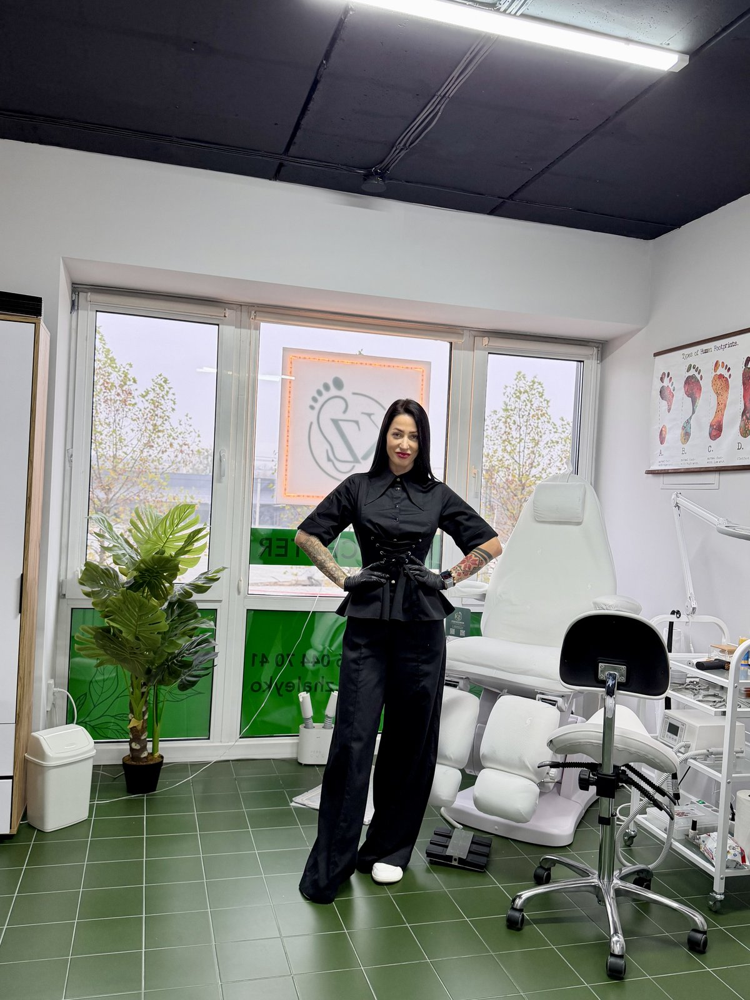
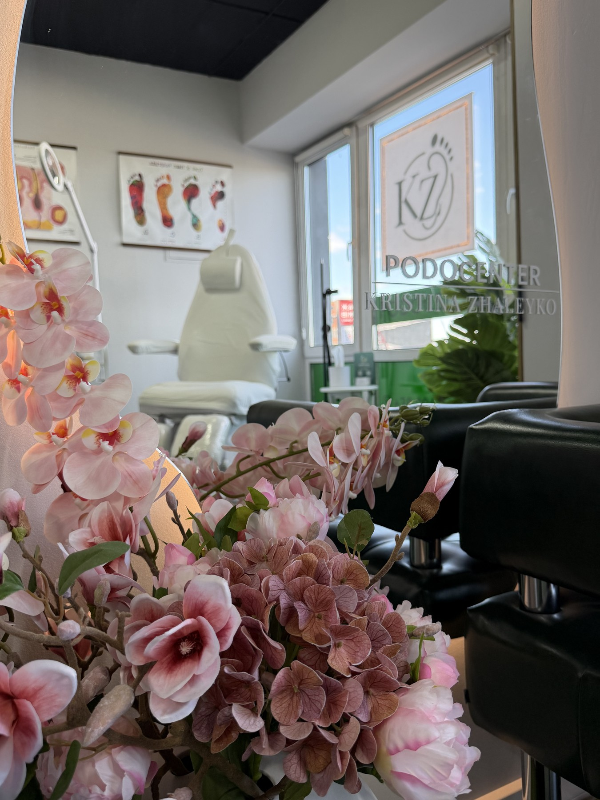

Професійна подологічна допомога при врослих нігтях, оніхомікозі, мозолях та тріщинах. Корекція титановою ниткою, медичний апаратний педикюр та повна стерильність за медичним стандартом.

Ми не маскуємо симптоми декоративним лаком. Наша мета — усунути корінь патології та повернути фізіологічно здорову стопу.
Тісна взаємодія з дерматологами та хірургами. Направляємо на бактеріальні посіви, призначаємо скоординований догляд без сліпих маніпуляцій.
Дезінфекція в ультразвуковій ванні, сушка, пакування в крафт-пакети та стерилізація в медичному сухожарі або автоклаві. Пакет відкривається виключно при вас.
Виправлення деформованих та врослих нігтів корекційними системами (титанова нитка, скоби). Зняття больового синдрому вже на першій процедурі.
Реальні результати пацієнтів Центру подології Христини Жалейко в Ірпені. Атравматичні методики, зняття больового синдрому з першого прийому та стійка динаміка загоєння.

Виражене потовщення рогового шару, болісний тиск при ходінні, сухість та мікротріщини. Попередні спроби самостійного зрізання стан лише погіршили.

Апаратна обробка фрезами з водяним охолодженням, лікувальні оклюзійні пов'язки та професійний домашній догляд. Повне відновлення шкірного малюнка.

Зняття болю за 15 хвилин без видалення пластини та хірургічних швів.

Німецькі спреєві апарати зі стерильними фрезами. Безпека при діабеті.

Виявлення першопричини мозолів та натоптишів, рекомендація устілок.
Усі маніпуляції виконуються стерильним інструментом на професійному обладнанні зі спреєвим охолодженням.
Безопераційне виправлення деформації врослого або скрученого нігтя. Рівномірний тиск знімає біль з першого дня.
Атравматичне вивільнення кута нігтьової пластини, антисептична обробка запалення, тампонада каполіном.
Комплексна апаратна обробка стоп та пальців при гіперкератозі, омозолілостях, потовщених нігтях і діабетичній стопі.
Видалення ураженої частини нігтя, підготовка до нанесення лікарських засобів дерматолога, забір аналізу за потреби.
Безболісне висвердлювання твердого стрижня спеціальною фрезою з розвантаженням тиску. Біль зникає миттєво.
Індивідуальні курси з постановкою руки: Базовий курс подології, Титанова нитка, робота зі складними стопами.
Сучасний простір клінічної подології в Ірпені. Німецьке обладнання, стерилізаційні протоколи медичного класу та максимальний комфорт для кожного пацієнта.

Зручна локація, фірмова навігація та затишна зона очікування.

Автоклавування у крафт-пакетах, ультразвукова ванна та індикатори.
Аналіз навантаження на стопу, склепіння та підбір індивідуальних устілок.

Ергономічне регульоване крісло, спреєві апарати та бездоганна гігієна.
Подологія — це прикордонна галузь між естетикою та медициною. Якщо випадок потребує медикаментозного лікування системного грибка, хірургічної пластики валика або ортопедичних устілок, ми направляємо пацієнта до перевірених профільних лікарів та ведемо реабілітацію разом.

"Христина буквально врятувала мій палець. Більше року мучилася із врослим нігтем, боялася йти до хірурга. Встановили титанову нитку за 20 хвилин, абсолютно безболісно! Біль минув у той же вечір."
"Привів сина 12 років після невдалої спроби самостійно зрізати кутик нігтя. Лікар підійшла неймовірно делікатно, дитина навіть не злякалася. Стерильність вражає — все запаковано, ідеальна чистота."
"Ходжу на медичний педикюр регулярно вже понад рік через особливості шкіри. Жодних мозолів чи натоптишів. Справжній експерт своєї справи та дуже затишний простір."
Оберіть зручний для вас день та час у системі онлайн-запису або зателефонуйте адміністратору напряму.